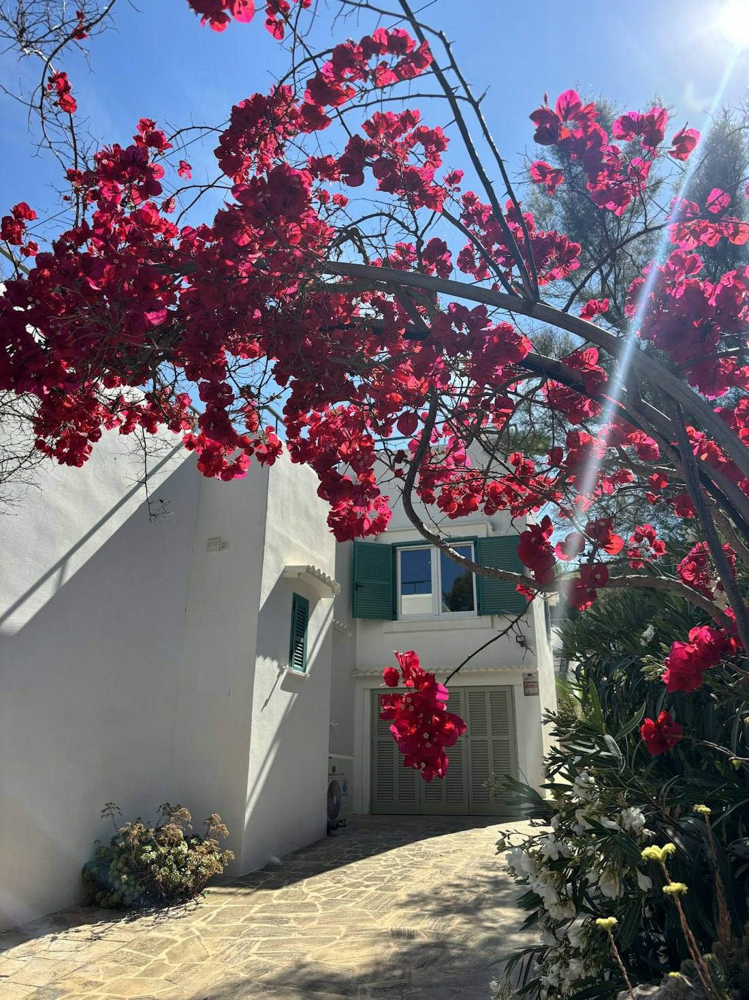

Inicio / Servicio inmobiliario
ServiciosServicio inmobiliario
Un profesional solo viene si alguien le abre. Una entrega necesita a alguien que la reciba. Yo soy esa persona y sigo el asunto hasta que queda resuelto.

Qué incluye
- Custodia segura de llaves y entregas de llaves
- Concertar citas con profesionales, abrir, estar presente y revisar el trabajo
- Pedir presupuestos y resumírselos con claridad
- Recibir entregas, muebles y paquetes
- Coordinación con el jardinero y el servicio de piscina
- Persona de contacto en urgencias, por ejemplo fugas de agua o tormentas
- Informe con fotos cuando el trabajo ha terminado
Cómo funciona
Usted me dice qué hay que hacer. Busco a los profesionales adecuados, coordino las citas y estoy presente mientras trabajan. Recibe de mí un informe claro: qué se ha hecho, cuánto cuesta y si queda algo pendiente. Los gastos los decide siempre usted.
Para quién es
Para propietarios que buscan a alguien en la isla que coordine, se ocupe y les mantenga informados.
Otros servicios

Cuidado de la vivienda y visitas de control
Visitas periódicas durante su ausencia: ventilar, revisar y detectar problemas a tiempo.
Saber más
Limpieza
Del mantenimiento regular a la limpieza general, con atención al detalle.
Saber más
Servicio de llegada y salida
Su casa preparada cuando llega y atendida cuando se va.
Saber másLa tranquilidad empieza con un mensaje.
Cuénteme cómo es su casa. Recibirá un presupuesto adaptado a su propiedad y a sus ausencias. Sin compromiso y con trato personal.